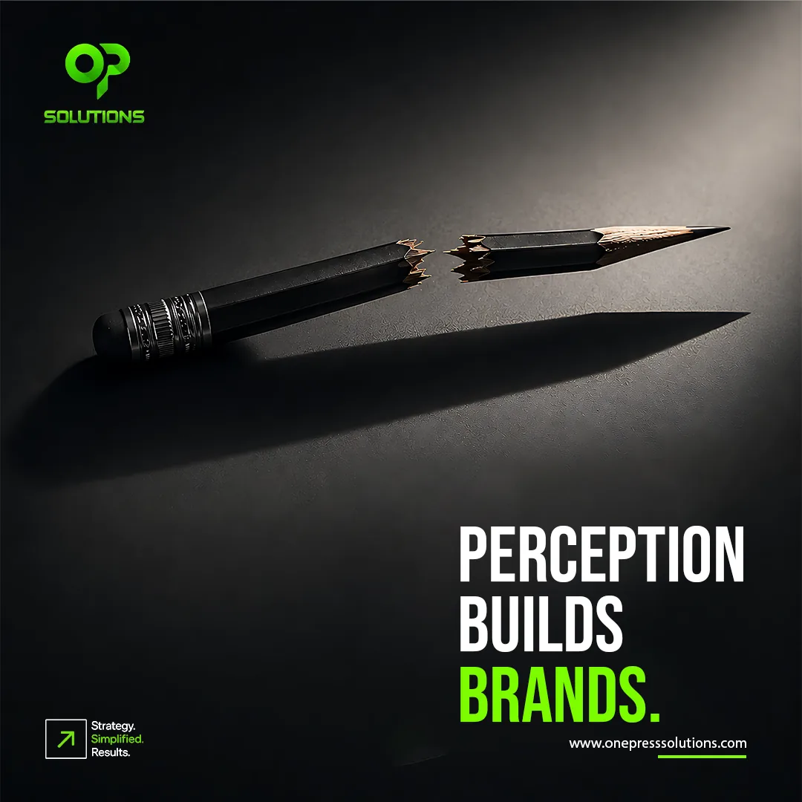
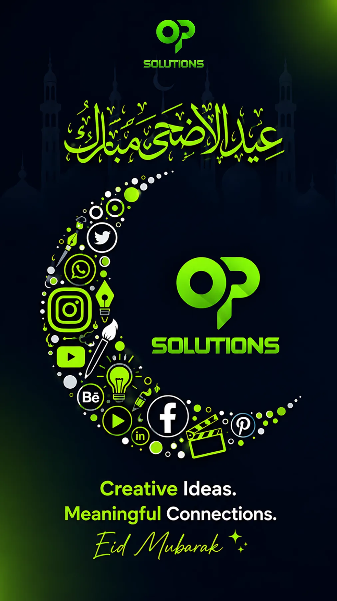
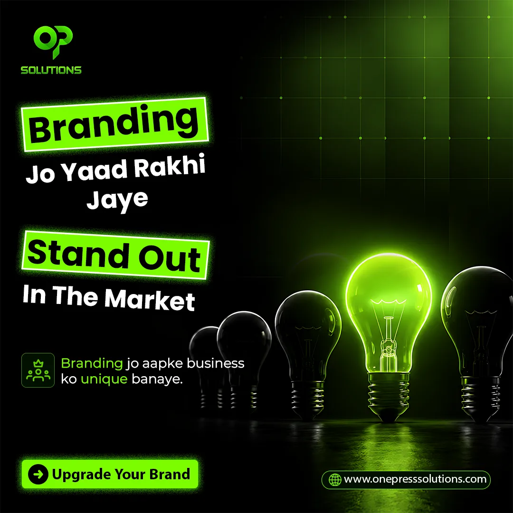
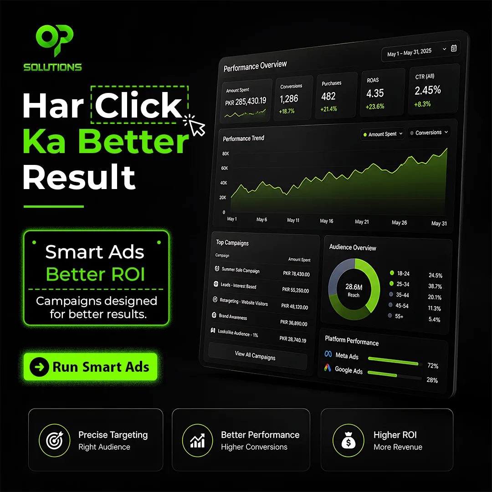
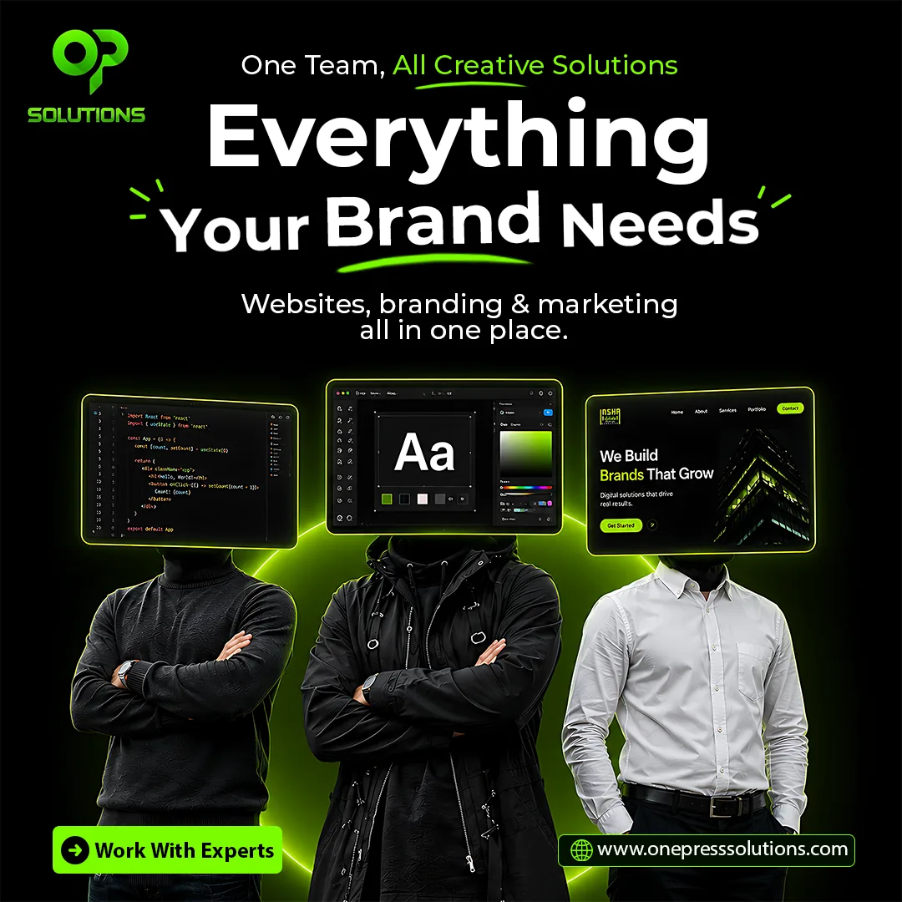
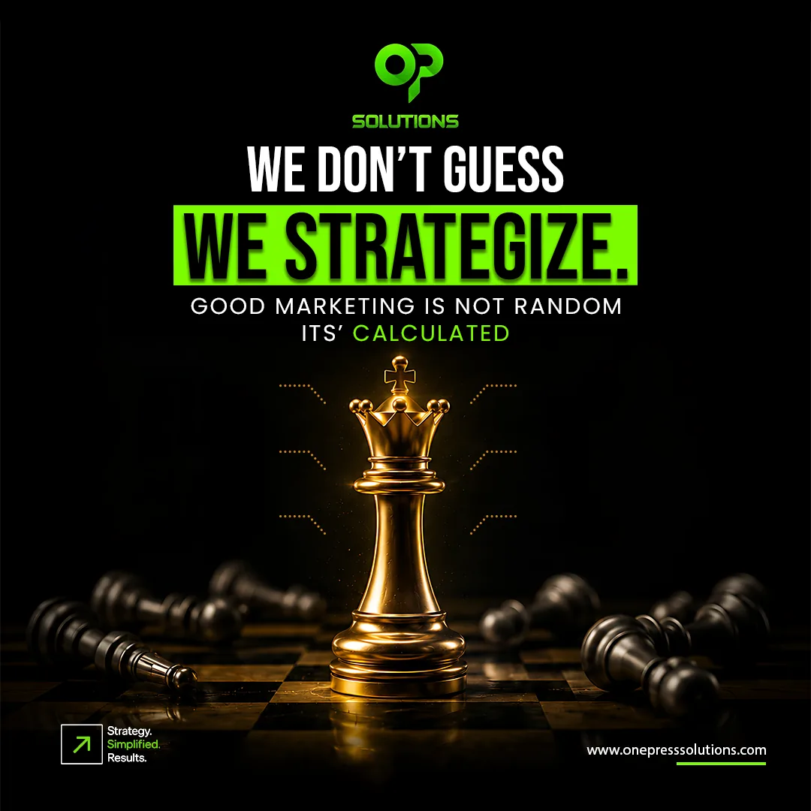

Social media system
OnePress Solutions
A content-led social media design system for OnePress Solutions, designed to make varied service messages feel like one recognizable brand.

01 / Overview
A social system built around recognition.
The OnePress Solutions work uses a high-contrast black and neon-green visual language across service-led content. The challenge is typical for an agency feed: every post discusses a different business topic, but the audience should still recognize the brand before reading the logo.
Black + neon green
A consistent color system creates immediate recognition.
Service education
Strategy, branding, e-commerce, digital growth and design topics.
15 pieces
14 static posts plus one reel in the supplied portfolio.
02 / Content & design system
One brand voice, multiple topics.
The series combines bold headlines, high-contrast imagery and repeated neon accents. That gives the feed a stable identity while allowing each service message to use a fresh concept.













03 / Motion extension
Short-form content
The reel shows how the static design language can move into video without abandoning the brand cues used throughout the feed.
04 / Outcome & value
Consistency without repetition.
The project creates a repeatable content system: different service topics stay visually connected, and the same brand language carries from static posts into motion content.